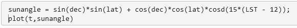

Web Development has always been much more than setting up a few pages on a website.
But now it can become even more...
Data Science, according to a few studies, will become
more and more
important up
until the year 2030. It is a mathematical skill and it is in high demand all over the world.
What is Data Science and how I would use it?
Let's say a Solar Panel Company wants to develop an app that proves the quality
of their products. This company is a start up and is looking for new talent to develop this app but
wants to spend as little money as possible. They might end up splitting up the work between a
small team of developers and data scientists but they're a small company.
The goal is to build an app that also demonstrates how much power their Panels can make in the right
circumstances. As a web developer you can use resources like MatLab
which doesn't do the work for you but saves you from learning several brand new languages like Python or
R.
Or you could use PyCharm or Jupyter Notebooks that work with Python. FreeCodeCamp.org has some of the best resources for quickly picking up some new skills.
After learning some new skills you can help companies with projects that you previously had to design with a team.
-
Step 1:

First we open up MatLab in the browser and then we upload SolarArrayProduction.xlsx in our MatLab.

Above is a mathematical equation that is commonly used to calculate how much energy is produced in solar panels. To me this is new as well so don't feel demotivated.
-
Step 2:
Type this into MatLab #1:

We set up a few "constants" or variables to use in our calculations. This will allow us to build the previously mentioned formula in MatLab.
The above variables are called dec (declination of the sun) and lat (latitude of the solar panels). lat and dec are values that we can look up. lat depends on the latitude of the location. See below:
And dec is simply how high the sun gets on a given day. We'll use a very sunny day to calculate the max output.Type this into MatLab #2:

We then change the degrees of the variables into radians since that is required for the above formula to work.
Perhaps by now you're noticing why MatLab is useful, it processes math in a familiar way and has several saved libraries of functions and tools for you to use without coding them yourself.
Type this into MatLab #3:

t(time) will be used as the x-axis in our first model. The modelling of data is quite an important step and will take some time to get used to whenever working with new technology. t will be broken up into 15min increments (hence the 0.25) and will continue from 5:30am (hence the 5.5) till 8pm (hence the 20).
Next we should calculate the LST (local solar time) as that is what the formula requires. Our time and LST is not the same so another calculation is needed.
Type this into MatLab #4:

LST does not take into account daylight savings or local time zones. That is why we make it equal to t but subtract 1 hour for daylight savings and then we add 14.6 mins per 60mins for time correction. Time correction can be calculated like this:
4*(75-71.35) = 14.6 minutes.
It says 4 multiplies by (longitude of the current time zone minus longitude of solar panels). And as stated in the above LST link that I shared "The factor of 4 minutes comes from the fact that the Earth rotates 1° every 4 minutes".The maths you see above can be found quite easily by simply searching for formulas online.
-
Step 3:
Type this into MatLab #5:
Now we'll type out the formula we spoke about here. The formula will use radiances except for one section that uses degrees. MatLab has special functions for scenarios where sin, cos or tan needs to use degrees and in this case it's simply called cosd:

So we've loaded the data with the formula, we can then show it using a plot(x-axis, y-axis) function. This should show up in your workspace:
The above plot shows that mornings and evenings have the least amount of sun exposure and the afternoon the most. It's never 100% because the sun is never directly above this location.
Type this into MatLab #6:

Let's set up S_inc. This tells us the effect of the atmosphere on sun exposure. So the best exposure would be when the sun is at it's peak in the afternoon. That's when the sun is right on top of the building and passes through the shortest distance of atmosphere:

Below you can find the actual formula that you either know about or had to scoure the internet for:
.png)
Type this into MatLab #7:

First we calculate the max power generated using the first line and then we add in the min which tells the model it can't go past 207kW since that's the max output of the inverters in the solar panel. To make the graph visible we will once again use plot(x,y):

You can add in the above axis titles and heading by clicking on the graph and adding it in directly. No coding needed.
Type this into MatLab #8:

Finally, it's time to import the previously collected data from here: SolarArrayProduction.xlsx. This includes two sets of data from two sets of Solar Panels (AH3 and LSParking). We'll only be using AH3. Up until now we calculated the max kW generated by a section of solar panels from 5:30 till 20:00.
But now we'll import the excel file and eventually compare the two sets. They should be fairly similar. This will prove the effectiveness of the solar panels.
In the next line we type out another plot(x,y): to once again create a graph. This graph wont take a single day into account like our calculations so we'll have to figure out how to look at one day at a time in the next section.
-
Step 3:
Type this into MatLab #6:

Now let's zoom in on specific day and see how much it resembles our calculations. For that we have to specify where on the x and y-axis the machine has to look. We'll type in xlim for the x-axis and proceed to specify the year, month and day. To include the whole day of the 21st of June we'll have specify that we want the machine to show us everything that was recorded from the start of the 21st till the start of the 22nd.
For y we'll do something similar, although no function is needed as the data is only numerical and we want all of it so we say from -5 till 220 kW. This is because we want the graph to show all the data with some extra space to make it more readable.

Above we have the result of running the previous code.
Type this into MatLab #10

We checked the 21st but as you can see, it wasn't a very sunny day. Now we'll do the exact same code but for a moer sunny day, the 26th of June.

That's a pretty similar looking graph but we can't be sure just yet. We can see things are looking good but we can't prove anything yet. Ideally we should match these two models up and create a graph to clearly show the similarities.
Type this into MatLab #11

To make sure the two graphs can fit we have to make sure their axis are the same. Above we are changing the month of June into a grid (or matrix) of days and times. The data was collected 4 times an hour for 24 hours for 30 days so 4*24 = 96 times for 30 days. Now each day is a column. Below we're calling the 26th of June again:
Type this into MatLab #12

We have the day but each day is also divided into time stamps. We'll create the range for a full day from 0:30 till 23:30, starting at 0.
Type this into MatLab #13

Below you can see the result of the above plot where we inserted a character (the dot or ".-") at each time stamp:

-
Step 4:
Now to match the graphs to prove effectiveness.
Type this into MatLab #14

We start by using plot and then adding in the two graphs. First we add the collected data of the 26th of June with tfullday,dayofinterest,'.-' and then our calculated max kW for a day with t,production_theory and seperate them wih a comma.

Above we can see the final result to prove that these solar panels ,AH3, are performing optimally. And just to remind you again all of these labels in these graphs can either be coded or labeled.
MatLab Project:
Goal: Analyse and predict generated power at maximum sun exposure.
Location: Natick, Massachusetts.
Let's use MatLab for this project and focus on predicting the power generated.
We'll do this
by using data collected from a business with solar panels in an excel file. The excel file gives
the recorded data of a very sunny
day which makes it ideal for predicting max power output.